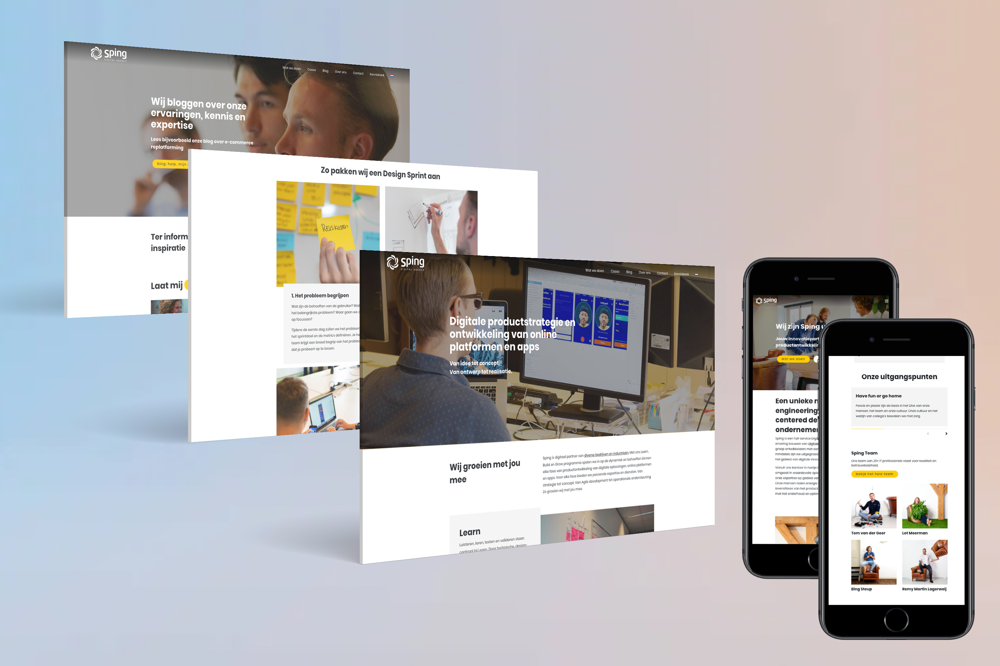

- 
Herontwerp Responsive Website
Bekijk live versie
User Centred Design
Wordpress
Responsive Webdesign
Usability Test
Search Engine Optimazation
Sketch
Bij Sping werk ik als UX-designer voor verschillende projecten in scrum teams aan het optimaliseren van gebruikerservaring rondom apps, websites en dashboards. Eén van de taken waar ik mij mee bezighield bij Sping was het volledig herontwerpen van de onze eigen website. Dit moest gebeuren, omdat er gebruik was gemaakt van een third party template die in de toekomst wellicht niet meer veilig genoeg zou zijn.
We besloten om onze eigen Wordpress template "from scratch" te maken. We hadden dus de ruimte om onze user experience design skills op de proef te stellen en deze website een nieuwe jasje te geven. We hielden nu extra veel rekening met de doelgroep door deze constant te betrekken in het ontwerpproces en achteraf te testen. Ik heb geholpen met het bouwen van de website in Wordpress, het optimaliseren van de SEO en het usability testen van deze nieuwe versie.
Vorige case Volgende case